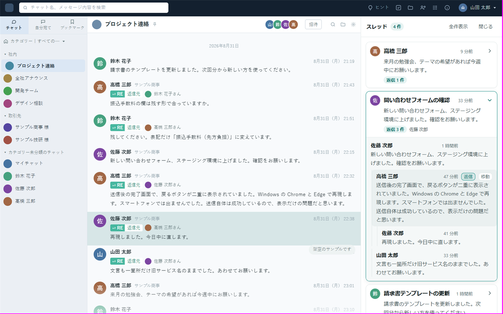
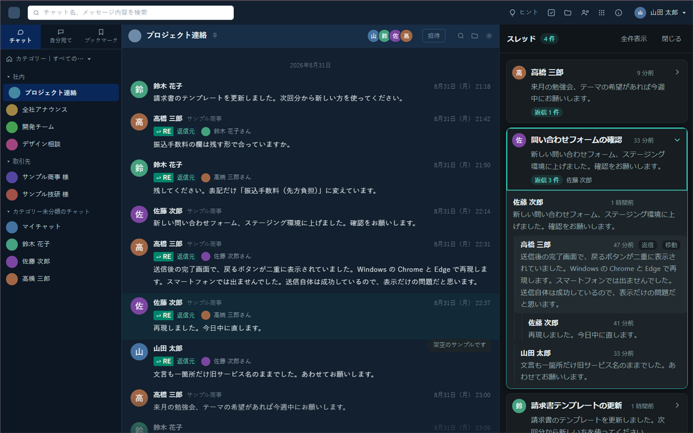

どのメッセージへの返信かを、階層で表示する
返信先をたどって、いちばん最初のメッセージまで遡ります。 誰の発言に誰が答えたのかが、字下げと線で分かります。
- 階層の深さに制限なし
- 返信がぐるぐる回っていてもエラーにならない
- 親が未読み込みのときはバッジで表示
外部への通信ゼロ・ソースコード公開
画面の右側にパネルが増えて、返信のつながりごとにメッセージがまとまります。 Chatwork の画面そのものは変わりません。
無料・広告なし・アカウント登録なし・権限は storage のみ

右側のパネルが追加されます（架空のサンプルです。実在の人物とは関係ありません）
0 件
外部への通信
1 つ
必要な権限（storage）
0 円
料金と広告
全文
公開しているコード
返信のつながりだけを見てメッセージをまとめています。Chatwork 側の表示は変えていません。
返信先をたどって、いちばん最初のメッセージまで遡ります。 誰の発言に誰が答えたのかが、字下げと線で分かります。
パネルの行をクリックすると、タイムラインの該当メッセージまでスクロールして、そのメッセージに色が付きます。 途中から読み始めても、前後のやりとりをすぐ確認できます。
最初は返信のあるスレッドだけを表示します。 「全件表示」を押すと、返信が付かなかったメッセージも一覧に入ります。
左が Chatwork の画面、右が追加されるパネルです。どちらかにマウスを乗せると、対応するもう一方に色が付きます。
Chatwork の画面（変わりません）
追加されるパネル
配色は Chatwork 本体の設定に合わせて切り替わります。この拡張の側に設定画面はありません。

会話の中身が外に送られることはありません。理由は次のとおりです。
外へ情報を送るコードが入っていません。送信先のサーバーも用意していません。
Chatwork のログイン情報には触れません。読むのは、画面に表示されている文字だけです。
読み取った内容は、その場の表示に使うだけです。端末に残すのは、パネルの幅と開閉状態、そしてあなたが自分で付けたスレッド名だけです。
アクセス解析も広告も入れていません。誰が何を見たかを数える仕組みがありません。
www.chatwork.com と、KDDI が提供する kcw.kddi.ne.jp でだけ起動します。ほかのサイトでは読み込まれません。
ソースコードを公開しています。通信に使う API を検索すると、1 件も見つからないことを確認できます。
先に書いておきます。以下は仕様で、直せる不具合ではありません。
Chatwork は過去ログを順に読み込みます。スレッドを組み立てられるのは、上へスクロールして読み込んだ範囲までです。範囲の外に親がある返信には「親メッセージ未読み込み」のバッジを付けて、単独のスレッドとして表示します。
他のルームのメッセージへの返信は、そのルームを開いたときに親子として結びつきます。
画面から読み取っている以上、これは避けられません。動かなくなったときはパネルに診断を出すので、こちらの不具合か Chatwork 側の変更かは切り分けられます。
表示だけの拡張です。メッセージの送信、編集、削除は行いません。
無料です。課金も広告もありません。
不要です。ログイン情報にも API トークンにも触れません。読み取るのは、いま画面に表示されている内容だけです。
www.chatwork.com と、KDDI が提供する kcw.kddi.ne.jp で動作します。それ以外のサイトでは起動しません。
Chatwork のタブをリロードしてください。拡張を追加した時点で開いていたタブには、新しいコードが自動では入りません。それでも出ない場合は、ツールバーのアイコンを押すと開閉が切り替わります。
読み込み済みの範囲だけが対象だからです。タイムラインを上へスクロールして過去ログを読み込むと、その分だけスレッドが増えます。親がまだ読み込まれていない返信には「親メッセージ未読み込み」のバッジが付きます。
パネルは Shadow DOM の中に閉じてあります。Chatwork 側の CSS と JS には触れず、こちらのスタイルも外へ漏れません。
いいえ。個人が作った非公式の拡張機能です。Chatwork を提供している 株式会社kubell とは関係ありません。
設定画面はありません。合わなければ削除するだけで、端末には何も残りません。
無料・広告なし・アカウント登録なし
最終更新日 2026年8月31日
本拡張は、いかなる情報も収集・送信・第三者提供しません。外部サーバーとの通信を行うコードを含んでおらず、すべての処理はお使いのブラウザの中だけで完結します。
Chatwork のページを表示しているときにのみ動作し、次を行います。
いずれも画面に表示する目的でのみ行われ、読み取った内容がブラウザの外へ出ることはありません。
Chrome の storage 権限を用いて、次の値のみを端末内に保存します。外部へ送信されることはなく、拡張機能を削除すると同時に消去されます。
| 保存する値 | 内容 |
|---|---|
| パネルの幅 | 数値（ピクセル） |
| パネルの開閉状態 | 開いている / 閉じている |
| スレッド名 | あなたが自分で入力した文字列（ルームごとに保存） |
一切行いません。外部との通信を行わないため、提供先が存在しません。
| 権限 | 理由 |
|---|---|
| storage | 上記のパネル表示設定とスレッド名を保存するため |
| www.chatwork.com | Chatwork の画面上で動作し、表示中のメッセージを読み取ってパネルを追加するため |
| kcw.kddi.ne.jp | KDDI が提供する Chatwork でも同様に動作するため |
対象は Chatwork のサービス提供ドメインに限定しており、その他のサイトでは動作しません。
ソースコードを公開しています。リポジトリを開き、 fetch / XMLHttpRequest / WebSocket / EventSource / navigator.sendBeacon を検索すると、 いずれも 1 件も見つからないことを確認できます。
本拡張は fetch / XMLHttpRequest / WebSocket / EventSource / navigator.sendBeacon の いずれも使用していません。ソースコードによる確認をご希望の場合は、お問い合わせください。
内容を変更する場合は、最終更新日を改めたうえで本ページに掲載します。収集する情報を増やす変更を行う場合は、事前に拡張機能の説明欄で告知します。
本拡張についてのご連絡は shngmsw-ctv@yahoo.co.jp までお願いします。